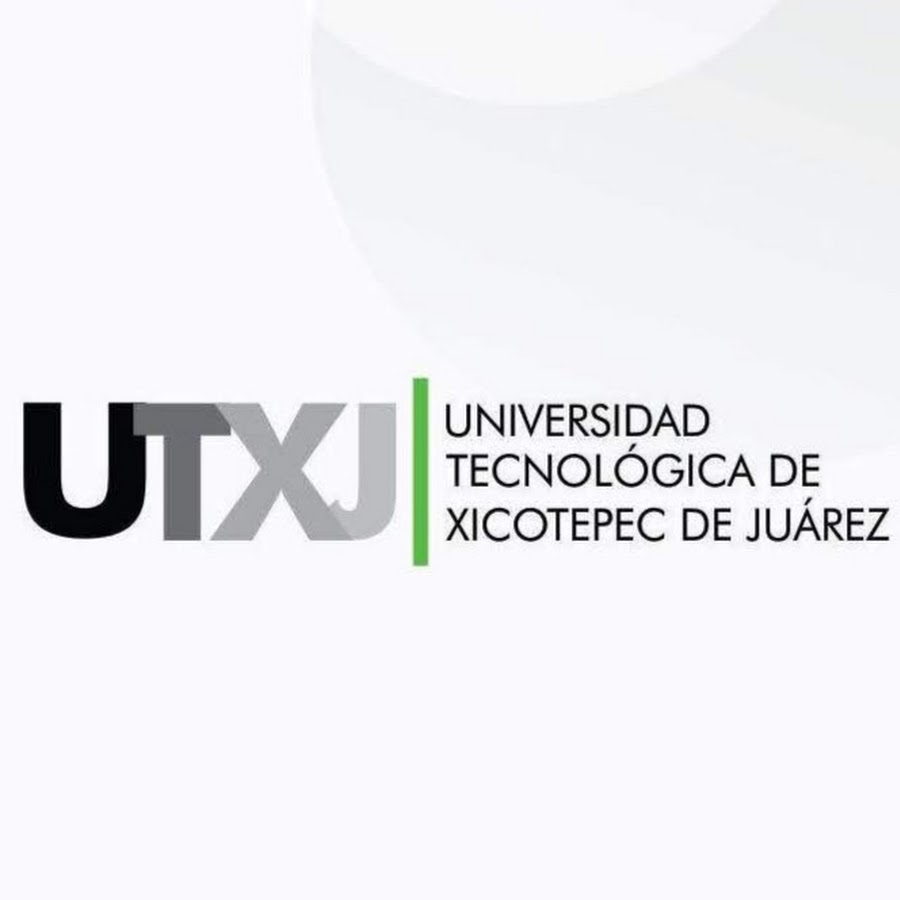

La gestión de la Universidad Tecnológica inicia en el año 2001, cuando el Presidente Municipal de Xicotepec de Juárez (1999-2002) y el Diputado Federal (2000-2003), proponen de forma independiente al Gobierno del Estado representado por el Lic. Melquiades Morales Flores, Gobernador Constitucional del Estado de Puebla (1999-2005) la instalación de una universidad pública en el Municipio, existiendo en esos momentos soló una universidad privada. En base a las experiencias que se tenían de Universidades Tecnológicas ya instaladas en el Estado, es como el Gobierno del Estado de Puebla pone gran énfasis para crear la Universidad Tecnológica de Xicotepec de Juárez (UTXJ), la quinta en el Estado de Puebla, y propone en el año 2001 al gobierno federal, representada por la Coordinación General de Universidades Tecnológicas (CGUT), la creación una universidad tecnológica que impulse la formación de profesionistas en los diversos campos del conocimiento científico, tecnológico y humanístico, que le permita ampliar la cobertura de atención hacia los municipios aumentando el número de instituciones de educación superior tecnológica; la propuesta del Gobierno del Estado para la creación de la Universidad, se sustenta con una serie de estudios de factibilidad, que permiten identificar los diversos factores que avalan la pertinencia de la institución. Al sustentarse el proyecto de creación de la Universidad, se determina la participación de los gobiernos, estableciéndose el Convenio de Coordinación suscrito el 30 de abril de 2002 por la SEP federal y el gobierno estatal, documento que tiene por objeto establecer la coordinación para la creación, operación y apoyo financiero de la UTXJ; estableciéndose en su Cláusula Quinta, que ambos gobiernos convienen en aportar el 50% cada uno para el funcionamiento de la Universidad, reflejandose en su presupuesto anual de operación. En el convenio se establece la aportación inicial del Gobierno del Estado, que respaldado por el Gobierno Municipal (2002-2005), adquirió y donó a la Universidad Tecnológica de Xicotepec de Juárez el predio donde está instalada la Universidad, con una superficie de 20 hectáreas conforme a los lineamientos establecidos por el Comité Administrador del Programa Federal de Construcción de Escuelas (CAPFCE), terreno avalado por la SEP del Estado y la CGUT; así mismo, se proporcionaron los servicios indispensables como la pavimentación de vías de acceso, suministro de agua, energía eléctrica, alumbrado exterior, cerco perimetral, transportación urbana y demás servicios complementarios. Así mismo, el 28 de Agosto de 2009 se reforma y adicionan diversas disposiciones al Decreto que crea la Universidad Tecnológica de Xicotepec de Juárez, motivada por la impartición de estudios del Nivel 5A, correspondientes al grado de licenciatura, de acuerdo a la Clasificación Internacional Normalizada de la Educación (CINE) de la UNESCO; en este sentido, a partir del ciclo escolar 2009-2010, se inició a ofertar éste nivel académico como una continuidad de estudios para los egresados del nivel Técnico Superior Universitario o Profesional Asociado, con una formación académica basada en el Modelo metodológico basado en competencias profesionales definido por la CGUT.
